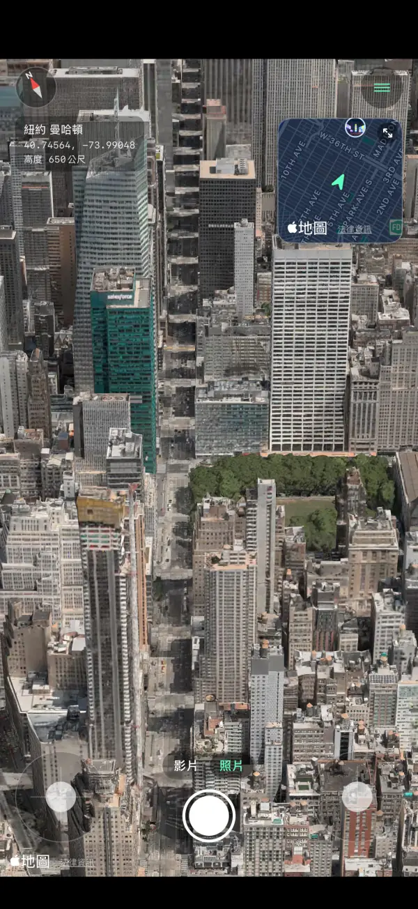
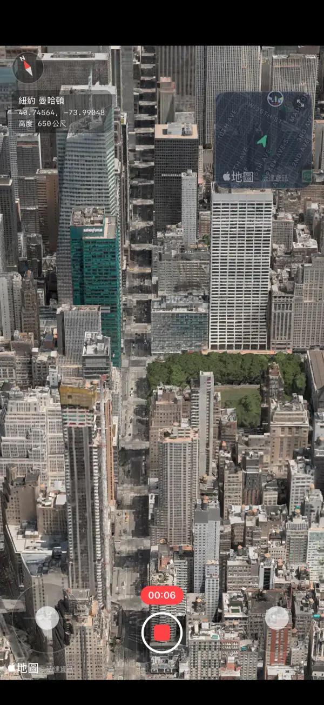
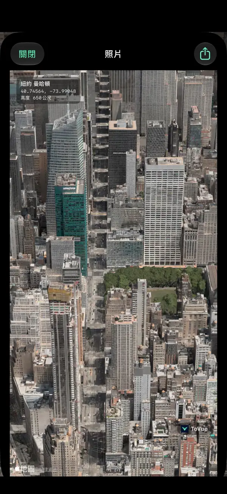
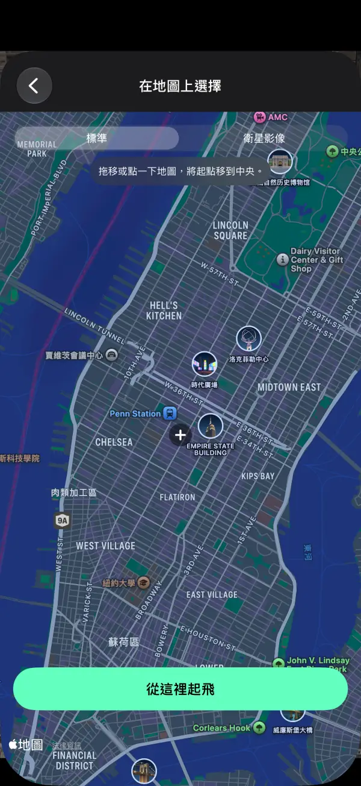
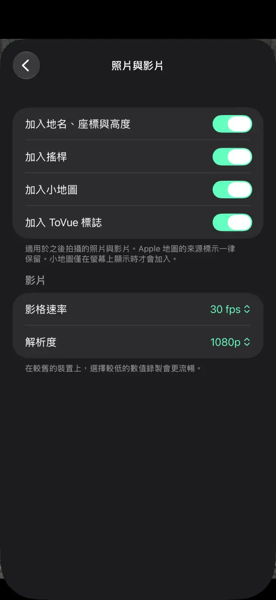

像空拍機一樣
飛越 3D 地圖。
在 iPhone 和 iPad 上，從空中自由飛越世界各地的城市。
無論照片或影片，都只留下地圖本身，不含操控按鈕。
 免費 · 無需註冊 · 無需定位權限
免費 · 無需註冊 · 無需定位權限功能
用搖桿飛行，把看到的風景原封不動地留下。
自由飛行
用螢幕上的兩支搖桿上升、轉向和前進。單手模式下一根手指就能操作。
小地圖
在右上角一眼看清目前位置和方向。點一下即可在地圖上選擇目的地。
錄製影片
像相機 App 一樣在照片和影片之間切換，把飛行過程錄下來。
純地圖照片
拍下不含操控按鈕的畫面，還可以加入地名、座標和高度。
隨處瞬移
搜尋或在地圖上選擇地點，立即從那裡的上空開始飛行。
支援 11 種語言
繁體中文、簡體中文、英文、日文、韓文等 11 種語言。適用於 iPhone 和 iPad。
螢幕截圖





價格
所有功能皆可免費使用。不想看廣告？買斷一次即可。
基本版
免費
- 所有飛行、拍照和錄影功能
- 橫幅廣告，以及移動後的全螢幕廣告
- 照片和影片帶有 ToVue 標誌
移除廣告和 ToVue 標誌
一次性購買
- 只需購買一次，不是訂閱
- 不再顯示任何廣告
- 可移除照片和影片上的 ToVue 標誌
使用須知
- ToVue 是虛擬地圖瀏覽工具，無法操控真實的空拍機，也不能用於導航或飛行規劃。
- 3D 建築和地形來自 Apple 地圖，細緻程度因地區而異。
- 需要連接網路。ToVue 從不使用 GPS，也不會要求取得你的位置。
- 照片和影片上一律保留 Apple 地圖的出處標示。
現在就去拍下天空中的風景吧。
免費 · 無需註冊 · 無需定位權限